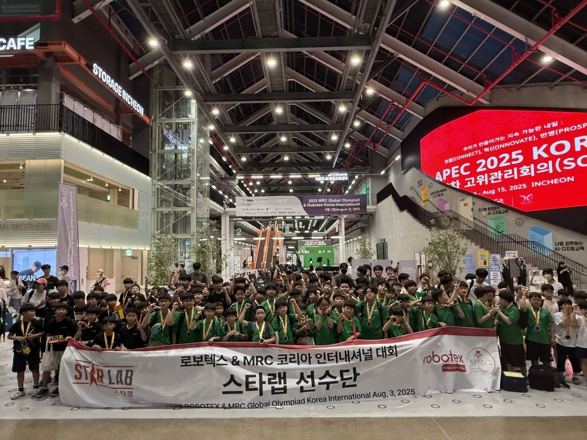
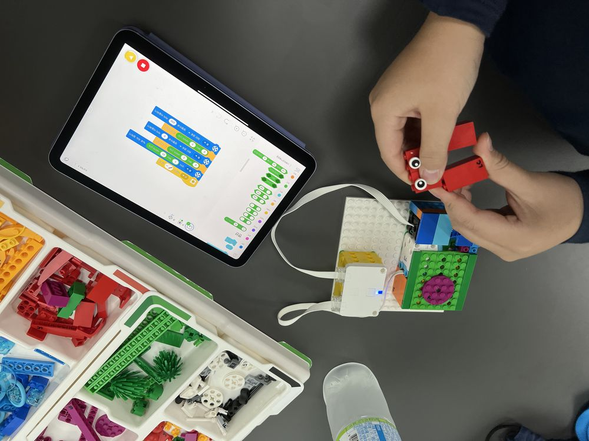
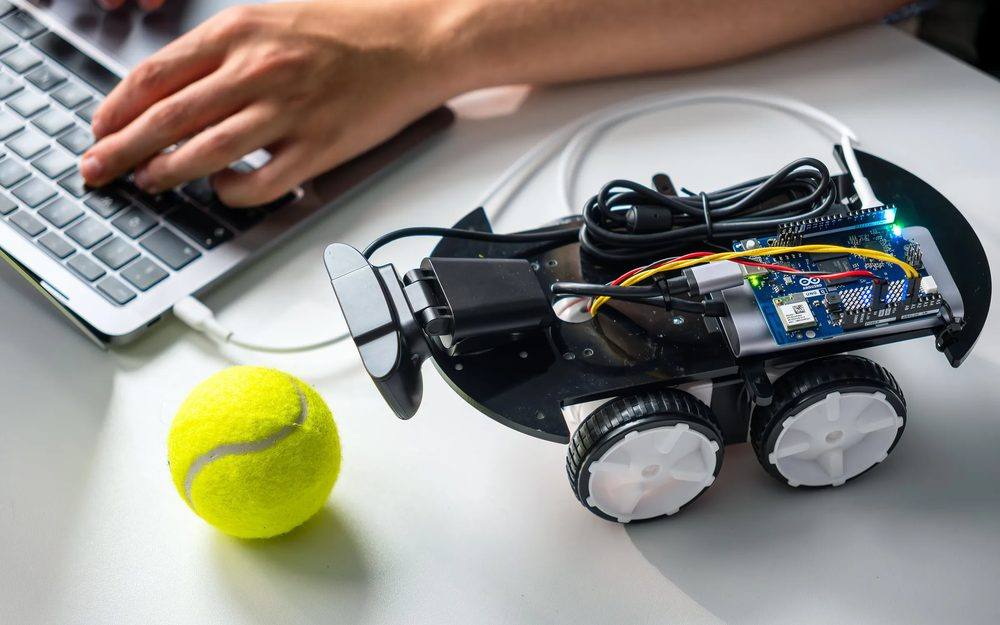
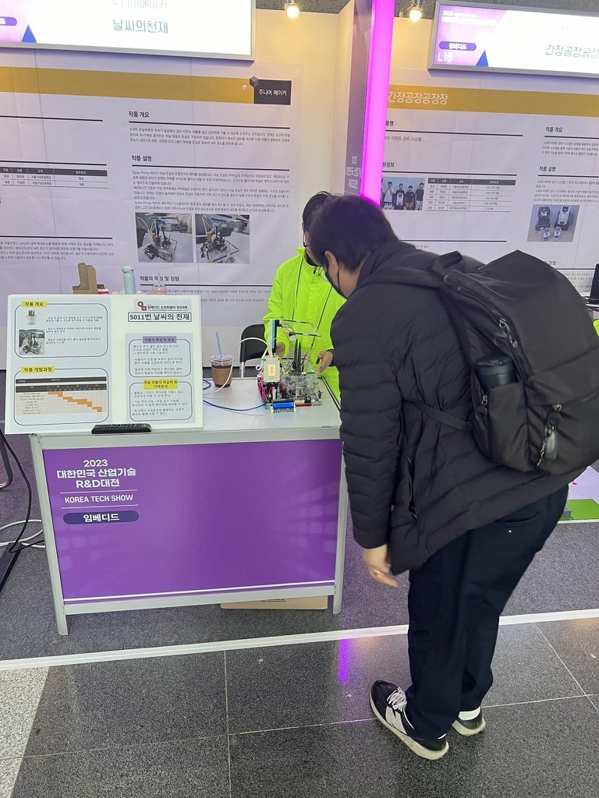
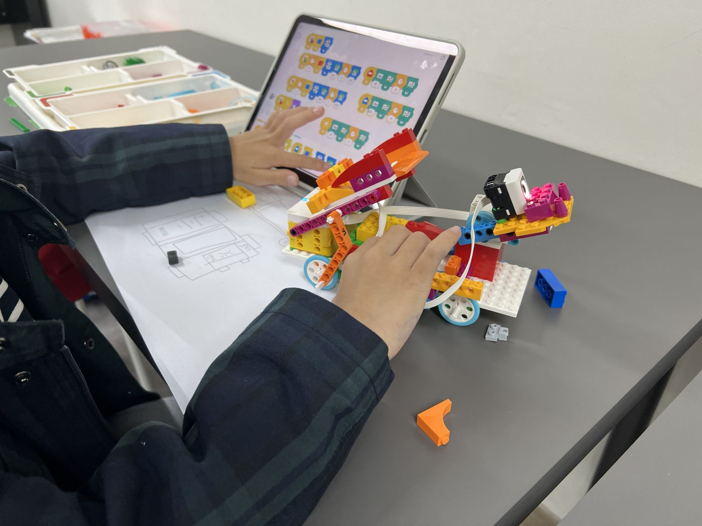

피지컬 AI 시대,
준비는 지금부터입니다.
로봇코딩부터 파이썬·C언어, 입시 준비까지
하나의 과정으로 이어집니다.
600차시에 달하는 빈틈없는 커리큘럼으로
언제, 어떤 수준으로 와도 딱 맞는 자리에서 소수정예로 시작합니다.
로봇대회, 공모전, 경시대회, 영재원, 자격증 준비반도 스타랩과 함께하세요.
로봇코딩부터 파이썬·C언어, 입시 준비까지
하나의 과정으로 이어집니다.
600차시에 달하는 빈틈없는 커리큘럼으로
언제, 어떤 수준으로 와도 딱 맞는 자리에서 소수정예로 시작합니다.
로봇대회, 공모전, 경시대회, 영재원, 자격증 준비반도 스타랩과 함께하세요.

스파이크 프라임으로 센서 값에 따라 행동을 설계하며 시작합니다.
정규수업과 같은 교구와 방식으로 직접 만들고, 코딩하고, 고쳐 가며 완성해 봅니다.
끝나면 지금 수준과 이어질 과정을 안내해 드립니다.
움직임의 원리에서 센서와 코드, AI 인식과 로봇 제어까지 7세부터 고3까지 한 줄로 이어집니다.



| 과정 | 대상 | 내용 |
|---|---|---|
| STEAM | 7세 |
레고 에듀케이션 얼리 심플머신과 브릭큐 에센셜로 장치를 직접 만들고 바꿔 가며 실험해, 움직임의 원리와 그 안의 과학 원리를 손으로 이해합니다. VEX123 로봇으로는 화면 없이 명령의 순서를 정하는 언플러그드 코딩을 배웁니다.
|
| 로봇코딩 에센셜 | 초1~2 |
로봇코딩의 기초와 컴퓨터 활용 습관을 쌓습니다.
|
| 로봇코딩 프라임 | 초3~6 |
센서로 판단하는 로봇 제어를 익히고 파이썬 학습으로 이어갑니다.
|
| 파이썬 | 초5~ | 문법과 알고리즘, 문제해결 연습, COS Pro 자격증 |
| AI 로보틱스 | 초6~ | 파이썬 로보틱스로 정밀 주행과 센서 제어를 익히고, 카메라로 인식·추적한 결과를 로봇의 동작과 연결합니다 |
| C · 임베디드 | 중등~ | C언어 기초, 아두이노로 장치 제어 |
| 프로젝트 | 고등 | Git·오픈소스, 심화탐구보고서, 공모전 도전, 생기부 관리와 포트폴리오 |
로봇과 알고리즘, 대회에서 확인한 실력입니다.
학생이 직접 코드를 짜고, 로봇을 돌려 보고, 틀린 곳을 스스로 고칩니다.

생각을 코드로 옮기고 결과를 보고 다시 판단하는 연습으로, 창의력과 끝까지 풀어내는 문제해결력, 함께 완성하는 협업능력을 기릅니다.
상담에서 자주 받는 질문과 수업 이야기를 정리합니다.
7세는 STEAM 과정으로 시작합니다. 얼리 심플머신과 브릭큐 에센셜로 장치를 직접 만들고 실험하며 움직임의 원리와 과학 원리를 배우고, VEX123 로봇으로 화면 없이 명령의 순서를 정하는 언플러그드 코딩을 익힙니다. 초등 1~2학년은 로봇코딩 에센셜로 순서·반복·조건을 로봇에 적용하며 블록코딩을 시작합니다.
스타랩에서도 초등 저학년 컴퓨터 사이언스 과정에서 엔트리를 배웁니다. 그다음 로봇코딩 프라임으로 센서를 쓰는 로봇 제어를 거쳐 파이썬으로 텍스트 코딩을 시작하고, AI 로보틱스와 C · 임베디드로 이어집니다. 스마트폰 앱을 만들어 보고 싶다면 앱인벤터 반을 함께 들을 수 있습니다. 초등 고학년이 처음 오면 레벨테스트로 맞는 단계를 바로 정합니다.
600차시에 달하는 커리큘럼 안에서 레벨테스트와 상담으로 지금 수준에 맞는 자리를 정합니다. 언제, 어떤 수준으로 와도 딱 맞는 자리에서 소수정예로 시작합니다.
파이썬 문법과 알고리즘을 익힌 뒤 AI 로보틱스에서 정밀 주행과 센서 제어, 카메라 인식·추적 결과로 로봇을 움직이는 법을 배웁니다. C언어 기초와 아두이노 장치 제어도 함께 다룹니다. 고등부에서는 Git·오픈소스, 심화탐구보고서, 공모전, 생기부 관리로 이어집니다.
로봇대회, 공모전, 경시대회, 영재원, 자격증 준비반을 운영합니다. 대회반은 Lv6부터 편성하고, 자격증은 블록코딩 단계의 COS와 파이썬 단계의 COS Pro를 목표로 합니다. 정보올림피아드 초등부 금상, FLL 퓨처 디자이너 종합 1위, 로보컵 코리아 오픈 1위, 로보텍스 아시아 챔피언십 3위 등의 실적이 있습니다.
격주 토요일 오후 2시 30분에 보강 수업이 있고, 해당 주 화요일에 결석한 학생에게 안내합니다. 같은 주 다른 반 수업에 참여하려면 학원에 문의해 주세요. 2주 이상 결석하는 경우에도 따로 문의해 주세요.
샘플클래스가 있습니다. 초등학생과 중학생은 90분, 7세는 60분 동안 진행하고, 참가비 30,000원은 정규과정에 등록하면 수강료에서 전액 차감합니다.
서울특별시 광진구 광나루로 602 대한빌딩 2층 201호 (구의동)
올림픽대로 북단사거리 아트박스 건물 2층, 양진초·양진중 인근
광장자이아파트 버스정류장 도보 1분, 건물 유료주차 가능
상담과 샘플클래스는 예약 후 진행합니다.